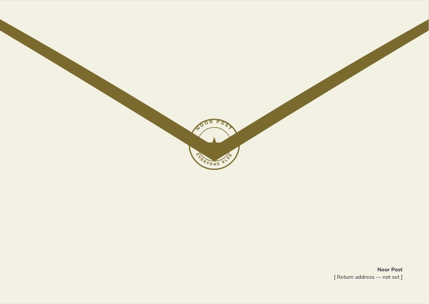
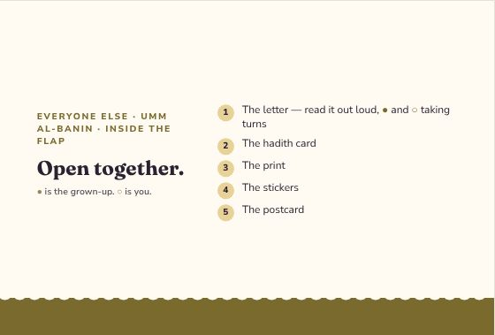
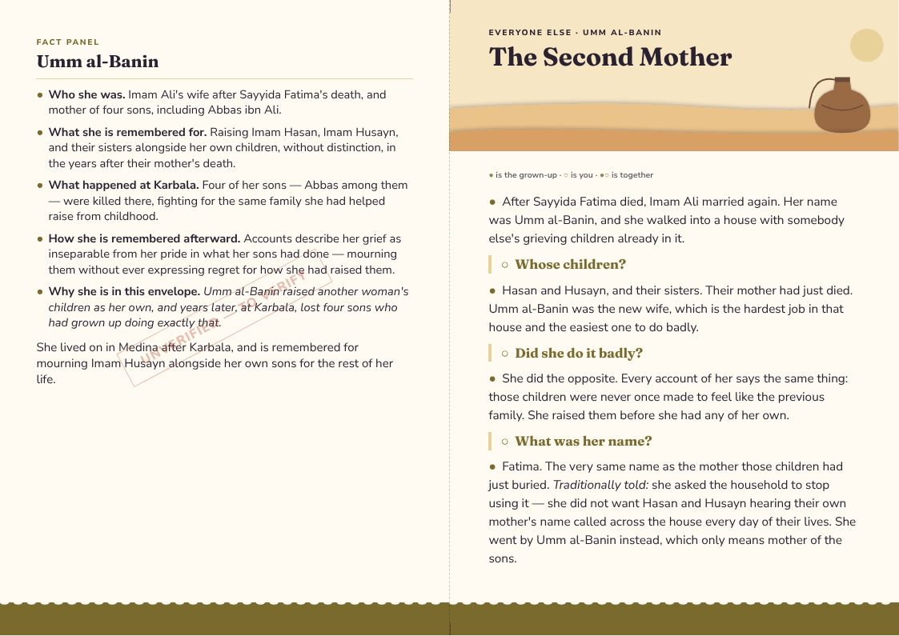
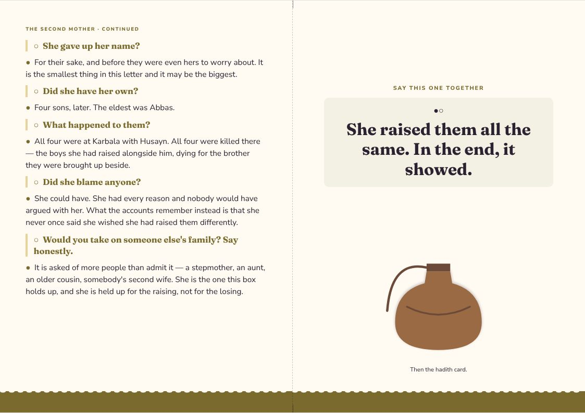
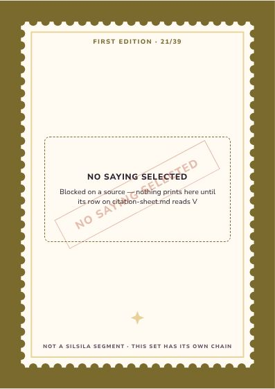
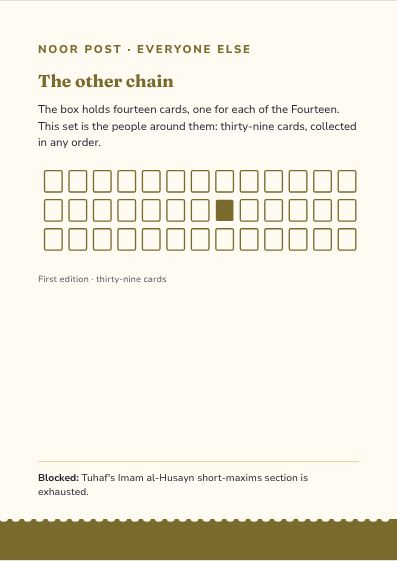
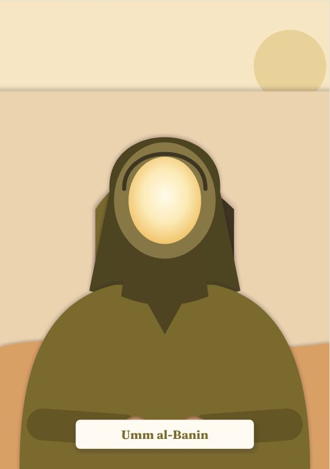
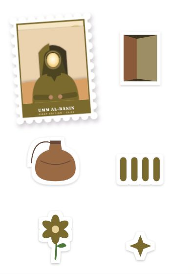
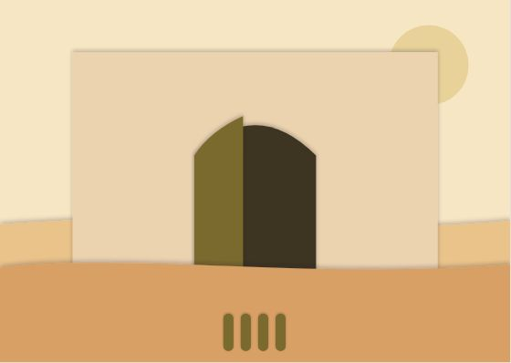

Everyone Else
Umm al-Banin
Umm al-Banin raised another woman's children as her own, and years later, at Karbala, lost four sons who had grown up doing exactly that.
Inside the flap
Open together.
- The letter — read it out loud, ● and ○ taking turns
- The hadith card
- The print
- The stickers
- The postcard
● is the grown-up. ○ is you.
The Second Mother
● the grown-up · ○ the child · ●○ together
●After Sayyida Fatima died, Imam Ali married again. Her name was Umm al-Banin, and she walked into a house with somebody else's grieving children already in it.
○Whose children?
●Hasan and Husayn, and their sisters. Their mother had just died. Umm al-Banin was the new wife, which is the hardest job in that house and the easiest one to do badly.
○Did she do it badly?
●She did the opposite. Every account of her says the same thing: those children were never once made to feel like the previous family. She raised them before she had any of her own.
○What was her name?
●Fatima. The very same name as the mother those children had just buried. Traditionally told: she asked the household to stop using it — she did not want Hasan and Husayn hearing their own mother's name called across the house every day of their lives. She went by Umm al-Banin instead, which only means mother of the sons.
○She gave up her name?
●For their sake, and before they were even hers to worry about. It is the smallest thing in this letter and it may be the biggest.
○Did she have her own?
●Four sons, later. The eldest was Abbas.
○What happened to them?
●All four were at Karbala with Husayn. All four were killed there — the boys she had raised alongside him, dying for the brother they were brought up beside.
○Did she blame anyone?
●She could have. She had every reason and nobody would have argued with her. What the accounts remember instead is that she never once said she wished she had raised them differently.
○Would you take on someone else's family? Say honestly.
●It is asked of more people than admit it — a stepmother, an aunt, an older cousin, somebody's second wife. She is the one this box holds up, and she is held up for the raising, not for the losing.
●○She raised them all the same. In the end, it showed.
Letter, reverse
UMM AL-BANIN
●Who she was. Imam Ali's wife after Sayyida Fatima's death, and mother of four sons, including Abbas ibn Ali.
●What she is remembered for. Raising Imam Hasan, Imam Husayn, and their sisters alongside her own children, without distinction, in the years after their mother's death.
●What happened at Karbala. Four of her sons — Abbas among them — were killed there, fighting for the same family she had helped raise from childhood.
●How she is remembered afterward. Accounts describe her grief as inseparable from her pride in what her sons had done — mourning them without ever expressing regret for how she had raised them.
●Why she is in this envelope. Umm al-Banin raised another woman's children as her own, and years later, at Karbala, lost four sons who had grown up doing exactly that.
She lived on in Medina after Karbala, and is remembered for mourning Imam Husayn alongside her own sons for the rest of her life.
Hadith card · First Edition 21 / 39 · SPECIMEN
Imam Al-Husayn said to His son Ali (peace be upon them): O son, beware of wronging him who does not have a supporter except God the Majestic.
Tuhaf al-Uqul, short maxims, no. 10 · trans. Badr Shahin
This is a specimen, not a selection. A real saying of Imam Husayn, quoted exactly — but not matched to this envelope’s theme. It stands here so the card can be judged at its true length. Tuhaf's Imam al-Husayn short-maxims section is exhausted.
The design
Everyone Else — one style for the line
Every companion envelope shares one style, so the thirty-nine belong together: each front carries its person as a stamp. Every item at true size → · Print PDF



















The artwork fixes composition, colour and medium for every item; final illustration is still to be commissioned. The fact panel is still to verify.